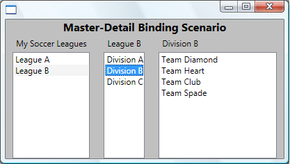

Практическое руководство. Использование шаблона "Основной/подробности" с иерархическими данными
В этом примере показано, как для реализации сценария «основной-подробности».
Пример
В этом примере LeagueList — это коллекция Leagues. Каждый League имеет Name и коллекцию Divisionsи каждый Division имеет имя и коллекция Teams. Каждый Team содержит имя команды.
Warning
It looks like the sample you are looking for does not exist.
Warning
It looks like the sample you are looking for does not exist.
Ниже приведен снимок экрана примера. Divisions ListBox Автоматически отслеживает выделение в Leagues ListBox и отображают соответствующие данные. Teams ListBox Отслеживает выбранные параметры в двух других ListBox элементов управления.

В этом примере следует обратить внимание на два обстоятельства:
Три ListBox привязать элементы управления с одним источником. Можно задать Path свойство привязки, чтобы указать, какой уровень данных ListBox для отображения.
Необходимо задать IsSynchronizedWithCurrentItem свойства
trueна ListBox элементов управления, из которых осуществляется отслеживание выбора. Задание этого свойства гарантирует, что выбранный элемент всегда задается как CurrentItem. Кроме того Если ListBox получает данные от CollectionViewSource, он автоматически синхронизирует Выбор и денежные единицы.
Метод немного отличается при использовании XML данных. Например, см. в разделе использование шаблона «основной-подробности» с иерархическими данными XML.